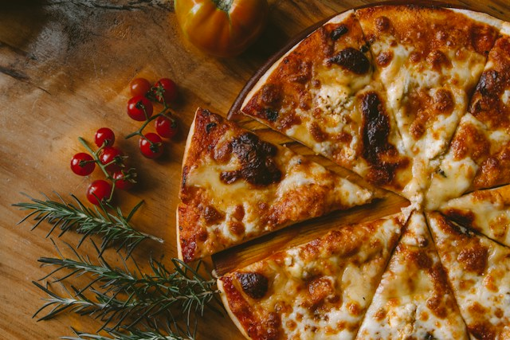

Back to Home
Pizza

Description
Pizza is a beloved dish consisting of a flattened dough base topped with sauce, cheese, and various toppings. It's a versatile meal that can be customized to suit any taste preferences.
In this recipe, we'll guide you through the steps to create a delicious pizza from scratch, including making the dough and preparing the toppings.
Ingredients
- 2 1/4 teaspoons active dry yeast
- 1 1/2 cups warm water (110°F/45°C)
- 3 1/2 to 4 cups all-purpose flour
- 2 tablespoons olive oil
- 2 teaspoons sugar
- 1 teaspoon salt
- 1/2 cup pizza sauce
- 2 cups shredded mozzarella cheese
- Your choice of toppings (pepperoni, vegetables, etc.)
Steps
- In a small bowl, dissolve the yeast and sugar in warm water. Let it sit for about 5-10 minutes until it becomes frothy.
- In a large mixing bowl, combine the flour and salt. Make a well in the center and add the yeast mixture and olive oil. Mix until a dough forms.
- Turn the dough onto a floured surface and knead for about 8-10 minutes until smooth and elastic.
- Place the dough in a lightly oiled bowl, cover it with a damp cloth, and let it rise in a warm place for about 1-2 hours or until it doubles in size.
- Preheat your oven to 475°F (245°C). If using a pizza stone, place it in the oven to heat up.
- Punch down the risen dough and divide it into two portions. Roll out one portion on a floured surface to your desired thickness.
- Transfer the rolled-out dough to a pizza pan or preheated pizza stone. Spread pizza sauce evenly over the dough, leaving a small border around the edges.
- Sprinkle shredded mozzarella cheese over the sauce, then add your choice of toppings.
- Bake in the preheated oven for 12-15 minutes or until the crust is golden brown and the cheese is bubbly and melted.
- Remove from the oven, let it cool for a few minutes, slice, and enjoy your homemade pizza!